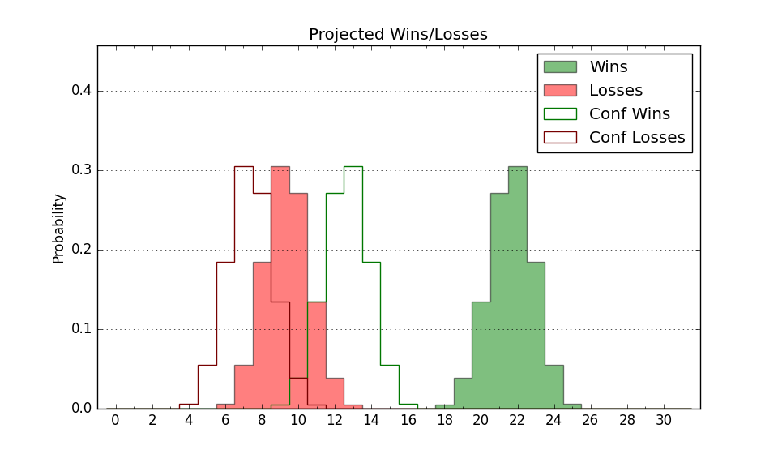

| Home | Game Probabilities | Conferences | Preseason Predictions | Odds Charts | NCAA Tournament |
| City: | Los Angeles, California | |
| Conference: | Big Ten (4th)
| |
| Record: | 8-4 (Conf) 17-6 (Overall) | |
| Ratings: | Comp.: 23.3 (30th) Net: 23.4 (30th) Off: 115.6 (47th) Def: 92.2 (16th) SoR: 78.0 (26th) |
| Remaining | ||||||
|---|---|---|---|---|---|---|
| Date | Opponent | Win Prob | Pred. | |||
| 2/8 | Penn St. (60) | 80.3% | W 77-67 | |||
| 2/11 | @ Illinois (13) | 23.9% | L 69-78 | |||
| 2/14 | @ Indiana (65) | 55.9% | W 71-69 | |||
| 2/18 | Minnesota (95) | 89.3% | W 70-56 | |||
| 2/23 | Ohio St. (20) | 59.0% | W 70-68 | |||
| 2/28 | @ Purdue (9) | 22.3% | L 65-73 | |||
| 3/3 | @ Northwestern (54) | 51.1% | W 66-65 | |||
| 3/8 | USC (59) | 80.3% | W 75-65 | |||
| Previous | Game Score | |||||
| Date | Opponent | Win Prob | Result | Off | Def | Net |
| 11/4 | Rider (328) | 99.0% | W 85-50 | 0.8 | 2.5 | 3.3 |
| 11/8 | (N) New Mexico (46) | 61.1% | L 64-72 | -18.7 | 3.7 | -15.0 |
| 11/11 | Boston University (300) | 98.6% | W 71-40 | -25.6 | 23.4 | -2.2 |
| 11/15 | Lehigh (272) | 98.1% | W 85-45 | 6.4 | 13.8 | 20.2 |
| 11/20 | Idaho St. (180) | 95.6% | W 84-70 | 13.7 | -24.9 | -11.1 |
| 11/22 | Cal St. Fullerton (311) | 98.7% | W 80-47 | -6.3 | 8.3 | 2.0 |
| 11/26 | Southern Utah (257) | 97.8% | W 88-43 | -4.2 | 22.3 | 18.1 |
| 12/3 | Washington (94) | 89.2% | W 69-58 | -8.2 | -2.3 | -10.6 |
| 12/8 | @Oregon (39) | 41.9% | W 73-71 | 4.7 | -3.1 | 1.6 |
| 12/14 | (N) Arizona (7) | 33.0% | W 57-54 | -16.6 | 24.9 | 8.3 |
| 12/17 | Prairie View A&M (331) | 99.0% | W 111-75 | 17.5 | -20.2 | -2.7 |
| 12/21 | (N) North Carolina (36) | 56.5% | L 74-76 | -2.6 | -1.7 | -4.4 |
| 12/28 | (N) Gonzaga (12) | 36.2% | W 65-62 | -4.8 | 16.0 | 11.2 |
| 1/4 | @Nebraska (49) | 47.6% | L 58-66 | -20.7 | 6.5 | -14.2 |
| 1/7 | Michigan (19) | 58.8% | L 75-94 | -1.8 | -25.9 | -27.7 |
| 1/10 | @Maryland (15) | 27.0% | L 61-79 | -4.7 | -9.1 | -13.8 |
| 1/13 | @Rutgers (73) | 58.7% | L 68-75 | -6.4 | -10.8 | -17.2 |
| 1/17 | Iowa (64) | 81.0% | W 94-70 | 30.0 | -8.4 | 21.6 |
| 1/21 | Wisconsin (16) | 56.8% | W 85-83 | 21.1 | -17.2 | 3.9 |
| 1/24 | @Washington (94) | 70.9% | W 65-60 | -5.8 | 6.6 | 0.9 |
| 1/27 | @USC (59) | 54.4% | W 82-76 | 23.5 | -13.2 | 10.3 |
| 1/30 | Oregon (39) | 71.0% | W 78-52 | 20.7 | 14.9 | 35.6 |
| 2/4 | Michigan St. (21) | 60.0% | W 63-61 | -8.5 | 6.0 | -2.5 |
| Stats & Trends | |||||
|---|---|---|---|---|---|
| Current | Day | Week | Month | Season | |
| Composite | 23.3 | -0.0 | +0.2 | -0.4 | +5.4 |
| Comp Rank | 30 | -- | +1 | -4 | +4 |
| Net Efficiency | 23.4 | -0.0 | +0.1 | -1.3 | -- |
| Net Rank | 30 | -- | +1 | -6 | -- |
| Off Efficiency | 115.6 | +0.0 | -0.4 | +4.9 | -- |
| Off Rank | 47 | +2 | +1 | +46 | -- |
| Def Efficiency | 92.2 | -0.1 | +0.5 | -6.2 | -- |
| Def Rank | 16 | -- | +3 | -12 | -- |
| SoS Rank | 40 | -- | -3 | +79 | -- |
| Exp. Wins | 21.6 | -0.0 | +0.5 | +0.3 | +3.1 |
| Exp. Conf Wins | 12.6 | -0.0 | +0.5 | +0.3 | +2.4 |
| Conf Champ Prob | 4.1 | +0.3 | +1.8 | -5.8 | -1.3 |

| Advanced Stats | ||
|---|---|---|
| Stat | Value | Rank |
| Off Eff FG % | 0.554 | 56 |
| Off Ast Ratio | 0.181 | 26 |
| Off ORB% | 0.332 | 64 |
| Off TO Rate | 0.131 | 64 |
| Off FT Ratio | 0.383 | 65 |
| Def Eff FG % | 0.473 | 67 |
| Def Ast Ratio | 0.134 | 91 |
| Def ORB% | 0.272 | 127 |
| Def TO Rate | 0.225 | 1 |
| Def FT Ratio | 0.342 | 209 |